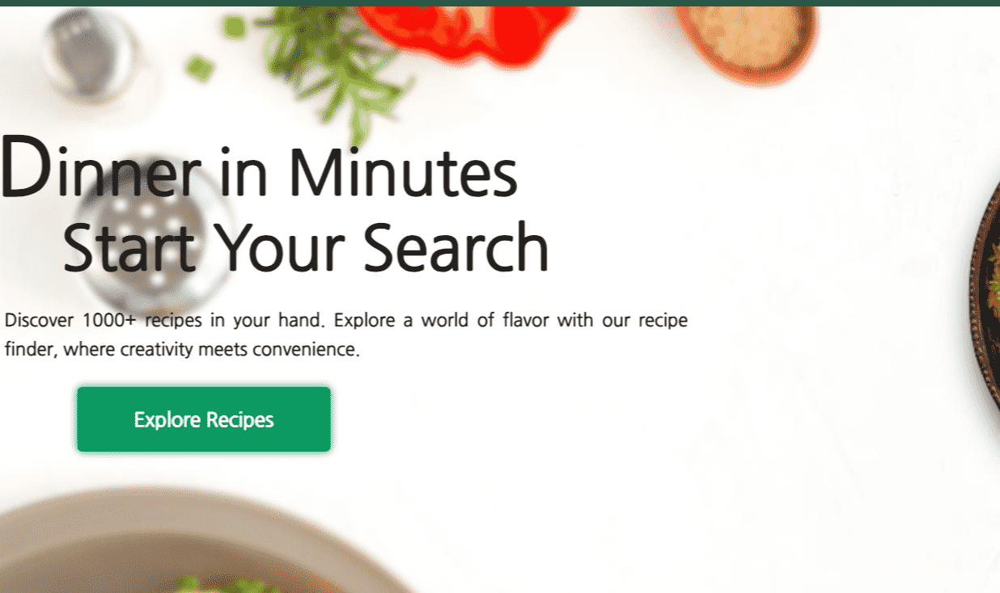
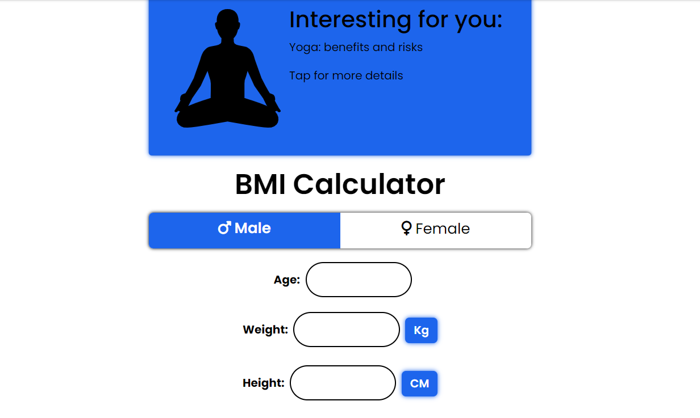
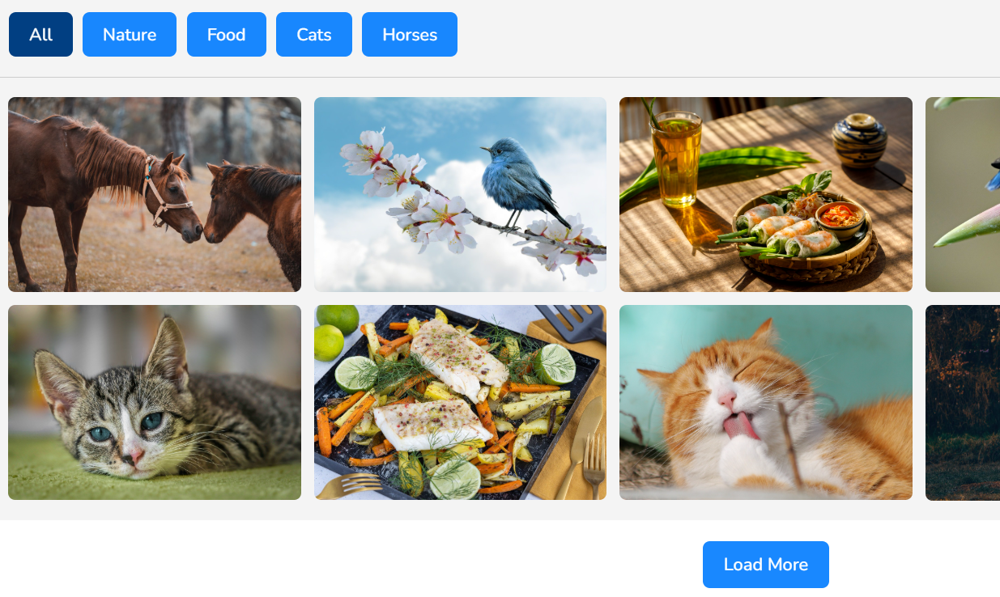

I'm a passionate Frontend Developer with a proven ability to craft captivating user experiences. I specialize in building high-quality, responsive web applications using React, JavaScript, and a modern tech stack.
Download Resume Hire MEI'm driven to create innovative and user-centric solutions that meet the unique needs of businesses and exceed expectations. I possess a strong understanding of UI/UX principles and a meticulous eye for detail, ensuring every aspect of the user journey is seamless and enjoyable.
As a front-end web developer, I transform ideas into engaging online experiences. Armed with Frontend Techstack, I sculpt the visual and interactive elements that users see and engage with on websites.
From crafting seamless navigation to ensuring responsive design across devices, I bridge creativity and functionality, bringing design concepts to life and delivering a user-centric journey.
Optimizing code and assets to improve website loading times and overall performance. Hence not only development looks great but also loads quickly, providing users with a positive experience.



Embark on a journey beyond the ordinary with a
Front-End Web Developer who doesn't just code websites
but crafts digital experiences that leave an indelible mark. Whether
you need a website revamp or an enthusiastic addition to your team,
I'm here to make it happen.
Drop a message.